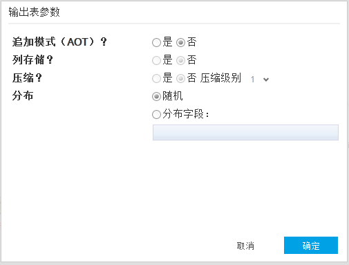

存储参数
当操作单元可产生输出表时，用户可通过存储参数对数据设置生成表的进行参数设置。用于提高存储性能。当前只支持PostgreeSQL数据库。

目前的参数仅支持 Greenplum ，参数如下（默认值为粗体）:
- 追加模式 （AOT）？ (Yes or No)
- 列存储 ？ (Yes or No) 。仅当追加模式为 Yes是生效。
- 压缩 ？ (Yes or No) 。仅当追加模式为 Yes是生效。如果选择 'Yes'，用户需要输入压缩级别（从 1 到9， 默认值为 1 ）。
- 分布列模式？ (Randomly, or Distribute by)。如果用户选择 'Distribute by'，则需要输入分布子句，表现为以 ‘，’分割的字段名（字段类型不能是数组）。